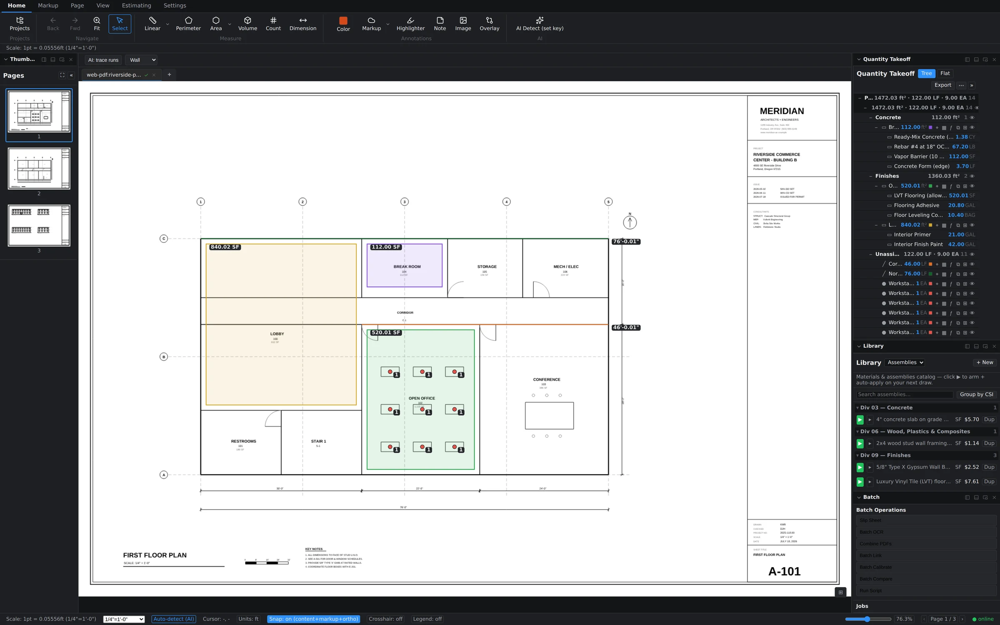
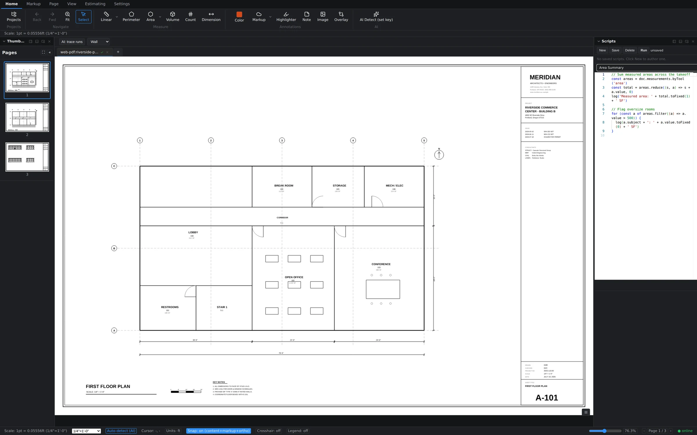

The Batch Suite lives in the Batch panel (View tab → panel toggles → Batch; it docks under the Library). Pick an operation, configure it in a short dialog, and it lands in a job queue that runs in the background — you can keep measuring while it works, and cancel a queued job before it starts.

The seven operations
- Slip Sheet — swap revised pages into a working set while keeping page order intact. The classic "Addendum 2 replaced sheets A-101 through A-110" chore, done in one pass instead of ten inserts and ten deletes.
- Batch OCR — run text recognition across scanned sheets so search, links, and text selection work on drawings that arrived as flat images.
- Combine PDFs — merge multiple files into one document, with control over where the incoming pages are inserted.
- Batch Link — generate sheet-number hyperlinks across the set, so callouts like "see A-201" become clickable navigation.
- Batch Calibrate — apply a scale to a whole page range at once instead of calibrating sheet by sheet. Pages you calibrate individually afterward keep their own override.
- Batch Compare — diff a pair of documents page-by-page and produce difference output, so you can sweep a revision for changes before deciding where to spend compare time on the live canvas.
- Run Script — run one of your saved automation scripts as a batch job (more below).
How the queue behaves
- Click an operation in the Batch Operations list and fill in its configuration dialog (page ranges, source files, output).
- The job appears in the Jobs section with its status. Jobs run one at a time, in order.
- Queue several jobs back-to-back — slip sheet, then OCR, then link — and let them run as a pipeline.
Note: batch operations execute through the native desktop engine, so run them from the desktop app. In the browser build the operation rows appear dimmed.
Run Script and the Scripts panel
For anything the built-in operations don't cover, the Scripts panel gives you a code editor with autocomplete and a document API — for example, doc.measurements.byTool('area') returns every area takeoff so a nine-line script can total square footage or flag oversize rooms. Save a script once, then run it on demand from the panel or queue it as the Run Script batch operation like any other job.
